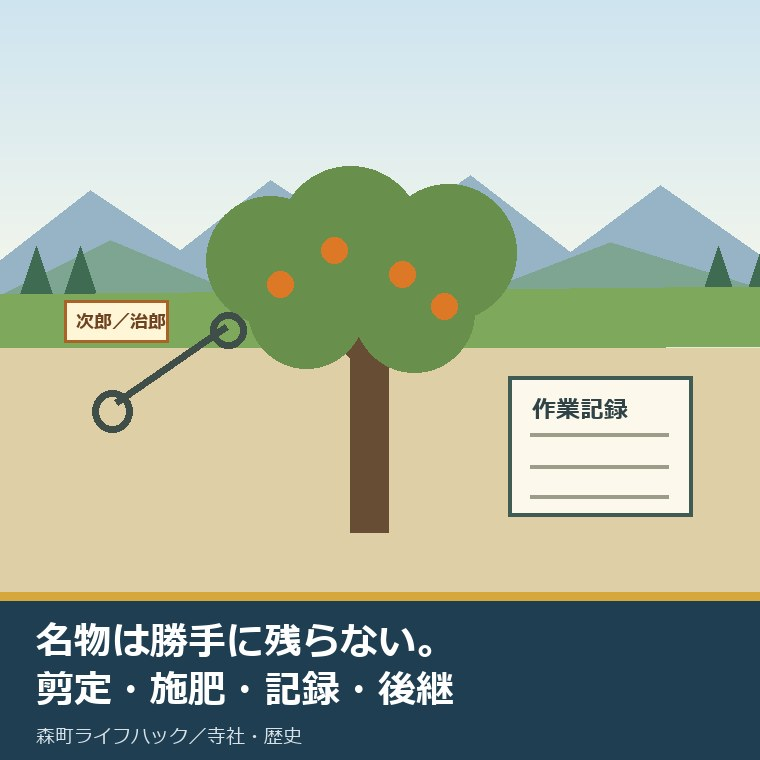
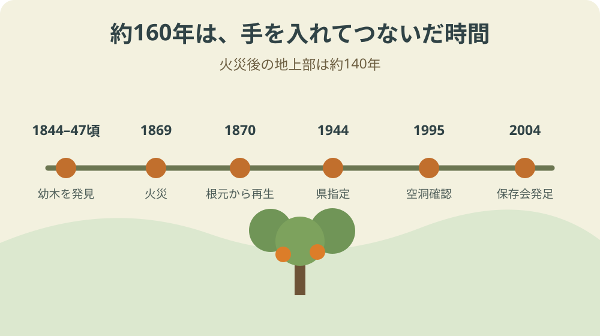
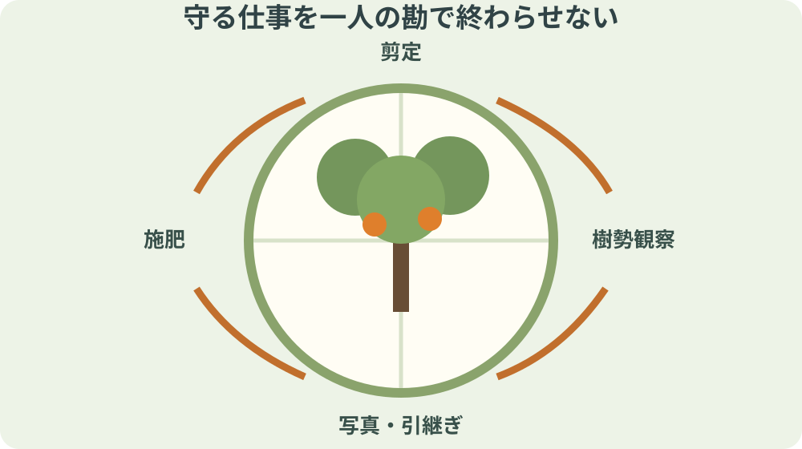

森町の次郎柿原木｜樹齢160年を守る人

この記事の要点
Q. 樹齢約160年の次郎柿原木は、誰がどう守っていますか。
A. 森町が所有・管理し、保存会と地域の人が手入れをつないでいます。原木は1869年の火災後、翌年に根元から再生し、1944年に県天然記念物となりました。1995年には空洞が見つかり保存処置が行われ、2004年春には保存会が発足。剪定、施肥、観察を続ける人の記録と後継が、名物の先にある条件です。
秋に森町で平たい柿を見ると「治郎柿」の名が浮かびます。その始まりとなった木は、森町に残る次郎柿原木です。果実の甘さだけでなく、一本の木を守る人と作業を知るための記事です。
静岡県は2025年12月23日、原木と保存に関わる人を特集しました。2025年は皇室献上が112回目となり、糖度20に達する実もあると紹介されています。
数字は目を引きます。しかし、木が一年生きるには、剪定、施肥、病害や空洞の観察、周囲の管理、記録、後継が要ります。収穫期だけ見ていると、その負担が消えます。
原木は、名物の看板で勝手に生き延びる木ではありません。剪定、施肥、保存処置、見回りをする人が途切れたら終わる。柿を一袋買っただけで、原木を守った気にはなりません。
これは私の意見です。私は保存会の作業へ参加した実体験があるかのようには書きません。森町と静岡県が公表する記録から、確認できる作業と確認できない費用を分けます。
確認日は2026年9月2日です。原木の状態、保存会の募集、見学範囲、販売時期は変わるため、最新の公式案内を確かめてください。
対案・結論：柿を買う入口から、守る作業の入口へ
次郎柿原木は、森町が所有・管理する静岡県指定天然記念物です。指定日は1944年3月31日。森町公式は樹齢を約160年、地上部を約140年と説明します。
二つの数字があるのは、1869年の火災で地上部が焼け、翌1870年に根元から新芽を出したためです。根を含む木の来歴と、現在の地上部の年数を分けて読みます。
1995年には幹の空洞が見つかり、保存処置が行われました。2004年春にはボランティアの保存会が発足し、毎年の管理を担っています。
静岡県の2025年特集には、保存に関わる小澤芳巳さんの剪定と施肥が紹介されています。小澤さんの家には、原木から接ぎ木した樹齢120年以上の木もあります。
一本を守る対案は、看板を増やすことではありません。作業日、樹勢、剪定箇所、施肥、異常、担当、費用を毎年同じ様式で残し、次の人へ渡すことです。
今日できる小さな一歩は、森町公式の保存会募集を確認し、森町商工会へ次回活動や加入条件を一件問い合わせることです。参加を決める前の確認だけで足ります。
「次郎」と「治郎」を混ぜない
原木の公式名称は「次郎柿原木」です。品種名も「次郎」です。発見者の松本治郎の名と、原木・品種の表記が同じ漢字ではない点に注意します。
静岡県の特集によると、販売される果実は2008年、JAと保存会が地域ブランド名を「治郎」に統一しました。売場で見る治郎柿と、文化財としての次郎柿原木は表記の役割が違います。
原木・品種は「次郎」／果実の地域ブランドは「治郎」
古い資料、文化財案内、商品名では表記が異なる場合があります。検索するときは両方を試し、出典の表記を勝手に直しません。
名称を統一すれば分かりやすい、とは限りません。文化財の登録名、品種名、販売ブランドにはそれぞれ履歴があります。違いを消すと、何について話しているのか曖昧になります。
この記事では、木そのものを「次郎柿原木」、品種を「次郎」、販売ブランドの果実を「治郎」と書き分けます。引用元の題名は、その資料の表記を保ちます。
名称の違いは小さな話に見えて、保存の記録では重要です。剪定記録の対象木、果実の出荷記録、文化財台帳を同じ「じろう柿」の一欄へ入れないためです。
発見、火災、再生を一本の年表で読む
森町公式によると、松本治郎は1844年から1847年ごろ、太田川で幼木を見つけ、自宅へ植えました。単年へ決めず、公式が示す幅のまま記録します。
木は実を付け、その特徴が地域で知られるようになりました。現在の産地やブランドの広がりを、発見時から決まっていた物語にしてはいけません。
1869年の火災で地上部は焼失しました。翌1870年、根元から芽を出します。現在の地上部は、この再生後の時間を生きています。
1944年3月31日、静岡県の天然記念物に指定されました。戦中の指定という年を覚えるだけでなく、指定後も木の状態が変化し、手当てが続いたことを見ます。
1995年に空洞が見つかり、保存処置が行われました。老木は指定された瞬間に安定するのではなく、観察で異常を見つけ、専門的な判断へつなぐ必要があります。
2004年春に保存会が発足しました。発見、火災、再生、指定、空洞、保存会という六つの節目を並べると、160年は放置された年数ではないと分かります。

樹齢160年という数字の読み方
森町公式は「約160年」と記します。確認日の2026年から機械的に引き算して誕生年を確定する数字ではありません。発見時期にも1844年から1847年ごろという幅があります。
地上部は約140年とされます。火災翌年の1870年から数えた説明ですが、公式ページの更新時点や概数を外して、毎年数字だけ増やすことはしません。
樹齢には、根、幹、接ぎ木された木、記録上の来歴という異なる対象があります。どの部分を数えた数字かを付けなければ、同じ160年でも意味が変わります。
小澤さん宅の接ぎ木された木は、静岡県特集で樹齢120年以上と紹介されます。原木と同じ木ではありません。原木から受け継いだ系統と、個体の年齢を分けます。
数字を大きく見せるより、「約」「地上部」「接ぎ木」を残す方が、後の人が更新しやすい記録になります。未確認の測定方法までは推測しません。
樹齢を伝える目的は、驚かせるだけではありません。次の十年に必要な観察と手入れが、短期の催事では終わらないと共有するためです。
良い点：すでに町・保存会・生産者が支えている
最初に認めたいのは、原木が町の所有・管理となり、県指定文化財として記録されていることです。所在地、指定日、由来、保存の経緯を公式ページで確かめられます。
次に、2004年から保存会が続いていることです。剪定や施肥は、収穫期の一日だけでは終わりません。季節ごとの判断と、前年との比較が要ります。
静岡県の特集が小澤芳巳さんの名と作業を出した点も大切です。「地域が守る」という主語だけでは、実際に動く人が見えなくなるからです。
接ぎ木された古木が地域に残ることは、原木一本だけでなく、品種を受け継いできた時間を示します。ただし、個人宅の木を公開物のように扱ってはいけません。
2025年に112回目の皇室献上が行われたことや、高い糖度の実が紹介されたことは、生産者が品質を積み重ねてきた結果です。称賛の前に、選果、栽培、出荷の負担があります。
町の人は、何もしていないわけではありません。文化財管理、保存会、生産、販売、案内をすでに担っています。その上で、続ける条件を具体的に考えます。
注文したい点：担い手、費用、記録を見える形にする
私が最優先で知りたいのは担い手です。会員数、年齢構成、年間作業回数、必要な技能、次の責任者が公表資料では確認できません。人数を推測せず、更新できる範囲から記録します。
二つ目は維持費です。剪定、施肥、診断、保存処置、保険、周辺管理に年間いくらかかるか、今回確認した一次情報では分かりません。献上回数や糖度では代用できない数字です。
三つ目は後継です。作業方法が一人の経験だけに残ると、休止時に引き継げません。写真の撮影位置、枝番号、資材名、量、判断理由を同じ用紙へ残す必要があります。
四つ目は見学者との距離です。原木を知る人が増えることは良い一方、根元への踏み込み、枝や実への接触、私有地への立入りは木と地域の負担を増やします。
注文には順番を付けます。まず年間作業記録、次に加入案内、次に費用の大枠、最後に来訪案内です。派手な発信を先に増やすと、現場の対応だけが増えます。
分からない項目を責めるのではなく、「未確認」と公開できる形も必要です。空欄を隠すより、誰がいつ確かめるかを置いた方が次の人は動けます。

大石の視点：名物と維持作業の間を埋めたい
森町の次郎柿を紹介するとき、私は甘さや献上の歴史へ引かれます。読みやすく、町の誇りを伝えやすいからです。
一方、原木の記事でそこだけを書くと、剪定する人の手、施肥の判断、空洞を見つける観察、作業を継ぐ後継が背景へ下がります。私はその書き方に迷います。
果実を買うことは生産者を支える一歩です。けれど、売上の一部が原木管理へ届く仕組みを確認していない以上、「買えば原木を守れる」とは言い切れません。
だから、消費と保存を無理につなげず、別の入口を置きます。果実は生産者から買う。原木保存は保存会の活動と募集を確認する。二つを混ぜない方が誠実です。
文化財を守る話で「地域のみんな」を主語にすると、担当が消えます。町、保存会、樹木の専門家、生産者、来訪者の役割を分け、連絡先と記録を残します。
私は改革を外から言い渡したいのではありません。すでに手を動かしている人の負担を見えるようにし、次の一人が入りやすい段取りを作りたいのです。
関連する森町の木・文化財・農業を読む
友田家住宅、次郎柿原木、三つの舞楽を暮らしにつなぐ記事では、指定文化財を所有者、管理者、費用、公開条件で分けています。原木の位置付けを広く見る入口です。
天宮神社のナギと実家の庭木を比べる記事では、指定木と個人の木で守る仕組みが違うことを扱います。大木なら誰かが守る、という思い込みを外します。
森町文化財保存活用地域計画の記事では、文化財を単体で残すだけでなく、地域で把握し、役割をつなぐ計画を読みます。
森町の茶を続けるかを価格と産出額から読む記事は、特産品の値上がりと担い手の継続が同じではないことを示します。柿も価格だけで後継を判断しません。
これらの内部リンクは、原木の状態を証明する資料ではありません。文化財、庭木、地域計画、農業経営という別の角度から、守る主体と費用を考える補助線です。
今日、保存会へ一件だけ確認する
森町公式の次郎柿原木ページを開き、保存会員募集の案内を確認してください。連絡先として案内される森町商工会の名称と確認日をメモします。
問い合わせる内容は「次回の活動時期」「加入条件」「見学だけ可能か」の三つから一つで十分です。いきなり現地へ行って作業を手伝おうとしません。
参加できない場合は、公式ページのURLと、原木・品種は次郎、果実ブランドは治郎という違いを家族へ一度共有します。誤表記を減らすことも記録の入口です。
秋に治郎柿を買うなら、生産者名や産地表示を確認します。ただし、その購入と原木保存への寄付を同じものとは書きません。支援先は仕組みが確認できたものだけ選びます。
現地を訪ねる場合は、公開された場所と案内に従い、根元へ入らず、枝や実に触れず、近隣の生活を妨げません。原木は撮影の道具ではなく、生きた文化財です。
問い合わせを一件したら、回答日と内容を一行で残します。次の人が同じ質問を最初から繰り返さずに済む記録が、今日できる小さな一歩です。
保存会へ入れない人も、公式の募集案内を一人へ手渡せます。参加者を勝手に集めず、活動日、保険、道具、指導者の確認を先にすることが、現場へ負担を押し付けない応援です。
よくある質問
Q1. 次郎柿原木と治郎柿は、なぜ漢字が違うのですか。
A1. 森町公式の原木名と品種名は「次郎」です。静岡県の特集によると、果実は2008年にJAと保存会が地域ブランド名を「治郎」に統一しました。原木・品種と販売される果実の表記を分けて確認します。
Q2. 次郎柿原木の樹齢160年は、地上部も160年ですか。
A2. 森町公式は原木を約160年、地上部を約140年と説明します。1869年の火災で地上部が焼け、翌年に根元から芽を出した経緯があるためです。樹齢の数字は対象と基準日を付けて読みます。
Q3. 次郎柿原木を守るため、今日できることは何ですか。
A3. 森町公式ページで保存会の募集案内を確認し、森町商工会へ次回活動や加入条件を一件問い合わせることです。現地へ無断で入り、枝や実に触れたり作業したりせず、公開範囲と案内に従ってください。
原木の樹勢、保存作業、公開範囲、保存会募集、販売状況は変わります。樹木への処置を個人判断で行わず、森町の担当窓口と専門家の判断に従ってください。
参考にした公式情報
- 次郎柿原木／静岡県森町（指定、所有・管理、発見、1869年の火災と翌年の再生、樹齢、1995年の空洞、2004年の保存会発足と募集を2026年9月2日に確認）
- 50 史跡・名勝・天然記念物／静岡県森町（次郎柿原木が県指定天然記念物として掲載されることを2026年9月2日に確認）
- 森町文化財保存活用地域計画案／静岡県森町（文化財を地域で把握し保存・活用する枠組みを2026年9月2日に確認）
- 「治郎柿発祥の地」森町でつなぐ原木と次世代／静岡県（2025年12月23日公表、次郎・治郎の表記、2008年のブランド統一、小澤芳巳さんの剪定・施肥、接ぎ木古木、2025年の献上回数を2026年9月2日に確認）

磐田市で小さな不動産業を営みながら、森町の空き家・農地・実家じまいのご相談を受けています。地域ですでに払われている負担を認め、担い手と維持の段取りを具体名詞で書きます。
最終確認日：2026-09-02 ／ 本記事は公表情報と執筆者の見解を分けています。会員数、年間作業回数、維持費、次の責任者は確認した一次情報に記載がないため推測していません。